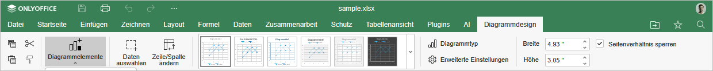
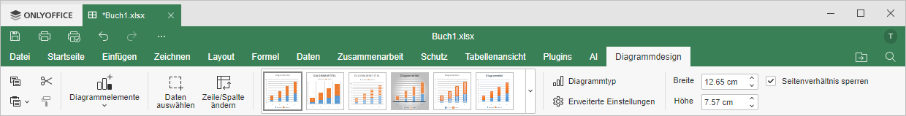

Die Registerkarte Diagrammdesign des Tabellenkalkulationseditors ermöglicht die Verwaltung des Aussehens und Layouts des ausgewählten Diagramms. Um zu erfahren, wie man ein Diagramm einfügt, lesen Sie bitte diesen Artikel.
Das entsprechende Fenster des Online-Tabellenkalkulationseditors:

Das entsprechende Fenster des Desktop-Tabellenkalkulationseditors:

Mit dieser Registerkarte können Sie:
- Diagrammelemente wie Diagrammtitel, Datenbeschriftungen und Legende verwalten,
- den Diagrammdatenbereich auswählen und Legenden-Einträge sowie Achsenbeschriftungen verwalten,
- die Zeilen und Spalten des Diagramms wechseln,
- ein Diagrammdesign aus den verfügbaren Voreinstellungen wählen,
- den Diagrammtyp ändern (Spalte, Linie, Kreis und andere),
- auf erweiterte Diagrammeinstellungen zugreifen,
- die Breite und Höhe des Diagramms manuell anpassen,
- das Seitenverhältnis beim Ändern der Größe sperren.